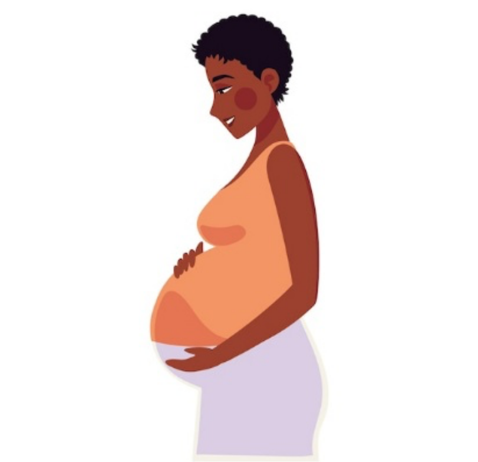
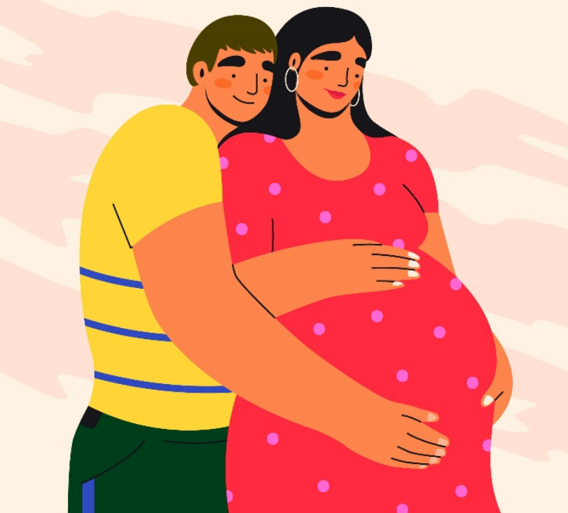

Aula 1
Parto Pélvico Vaginal (PPV)
Introdução
A apresentação pélvica ocorre em aproximadamente 3% das gestações a termo. No parto pélvico, a via vaginal impõe riscos relacionados ao desprendimento mais lento do corpo fetal e ao fato de o diâmetro biparietal ser o último a se desprender, expondo os recém-natos a maior morbimortalidade.
Várias manobras tocúrgicas podem ser necessárias para auxiliar o desprendimento dos diâmetros fetais (bitrocantérico, biacromial e biparietal), principalmente na posição de litotomia, e isso exige conhecimento e habilidades específicas.
A prevenção do parto pélvico pode ser obtida por meio de versão cefálica externa (VCE), procedimento que pode aumentar a frequência de parturientes admitidas em trabalho de parto com fetos em apresentação cefálica.
O parto pélvico vaginal vem progressivamente sendo substituído por cesáreas. É possível afirmar que conclusões enviesadas de estudos do início deste século contribuíram para esse cenário, uma vez que a recomendação da cesárea eletiva como prática mais segura para todos os fetos em apresentação pélvica foi rápida e amplamente disseminada. Desde então, cesáreas eletivas, mas também cesáreas de urgência realizadas na fase ativa do trabalho de parto, se tornaram comuns na Pré-natal de Qualidade pélvico. Consequentemente, os partos pélvicos vaginais vêm progressivamente se tornando exceção, sendo frequentemente conduzidos como urgências obstétricas.
Ao mesmo tempo, práticas de apoio ao parto pélvico vaginal, particularmente nas posições verticalizadas, vêm sendo estudadas e publicadas, oferecendo à especialidade a possibilidade do resgate dessa via de parto pautado em resultados possivelmente mais favoráveis. Portanto, é necessário corrigir e atualizar as orientações, ampliando a seleção adequada de parturientes que possam ser assistidas pela via vaginal. Também é imprescindível a retomada do ensino da VCE e das manobras tocúrgicas, tanto as já conhecidas e úteis na assistência em litotomia quanto aquelas recentemente descritas para assistência na posição vertical.
Principais tipos de apresentação pélvica
As apresentações pélvicas podem ser incompletas ou completas (pélvico-podálico). Veja a imagem a seguir que demonstra os principais tipos de apresentação pélvica.
Modalidades de apresentação pélvica
Agora, veja mais detalhes de cada tipo de apresentação pélvica.
Subdivide-se nos modos de nádegas pura (posição agripina), joelhos ou pés. No modo de nádegas pura, os quadris se encontram flexionados, e as pernas estendidas adiante do tronco. Esse é o tipo mais comum de apresentação pélvica incompleta, com frequência entre 50% e 70%. Nas demais apresentações pélvicas incompletas, que têm frequência entre 10% e 40%, partes de um ou dos dois membros inferiores (joelhos e pés) estão inferiormente posicionadas em relação aos quadris.
Apresenta quadril e joelhos flexionados, com os pés cruzados rentes às nádegas. Esse tipo de apresentação pélvica tem frequência entre 5% e 10%.
As apresentações pélvicas dos tipos incompleta modo de nádegas pura e completa são as mais favoráveis ao parto vaginal. Nessas apresentações, o plano mais baixo do corpo fetal contém o diâmetro bitrocantérico de maior dimensão, o que propicia dilatação efetiva das partes moles do canal de parto e favorece a descida e o desprendimento subsequente dos diâmetros biacromial e biparietal. Sendo assim, as coxas e o tronco fetal passam simultaneamente pelo canal de parto, facilitando o desprendimento dos ombros e da cabeça.
A morbidade em curto prazo dessas apresentações parece ser similar, porém a assistência por meio de manobras é mais necessária na pélvica completa. A apresentação pélvica incompleta, no modo de joelho e pés, apresenta a desvantagem do desprendimento antecipado dos membros inferiores em relação à pelve fetal. Sendo assim, os membros se desprendem facilmente por um colo incompletamente dilatado, ou mesmo por uma pelve de dimensões inadequadas.
Essa peculiaridade frequentemente traz dificuldades para o desprendimento imediatamente subsequente dos diâmetros bitrocantérico, biacromial e biparietal, uma vez que eles são significativamente maiores do que os diâmetros dos membros inferiores. Adicionalmente, o desprendimento antecipado dos membros inferiores oferece mais espaço para o prolapso de cordão umbilical, o que pode agravar uma situação de hipóxia já imposta pelo desprendimento dificultado do tronco e da cabeça fetal. Sendo assim, fetos únicos com essas apresentações não são elegíveis para o parto vaginal, sendo essa via de parto aceitável apenas se for um segundo feto gemelar, cuja possibilidade de sucesso de uma extração podal é maior.
Prevalência, patogênese, fatores de risco e risco de recorrência na apresentação pélvica
Em virtude da alta mobilidade do feto em uma cavidade uterina contendo elevação relativa do volume de líquido amniótico, a apresentação pélvica é uma ocorrência comum na gestação mais precoce. As prevalências antes de 28 semanas e no termo são, respectivamente, de 20% a 25,7% e de 3% a 4%.

Apresentação pélvica
Fetos em apresentação pélvica podem
ocorrer
em qualquer gestação, porém, em mais de 15% dos
casos, podem estar relacionados a anormalidades
placentárias, fetais ou maternas.

Apresentação cefálica
Fetos com anatomia, atividade, volume de líquido
amniótico e localização placentárias normais se
posicionam em apresentação cefálica próximo do
termo, pois essa estática fetal se torna mais
adequada para o espaço uterino (relação
conteúdo/continente; lei de Pajot).
Fetos com anatomia, atividade, volume de líquido amniótico e localização placentárias normais se posicionam em apresentação cefálica próximo do termo, pois essa estática fetal se torna mais adequada para o espaço uterino (relação conteúdo/continente; lei de Pajot).
Múltiplos fatores estão relacionados ao aumento da apresentação pélvica. Entre eles:
- Gestação pré-termo.
- Histórico familiar.
- Anormalidades uterinas (úteros bicorno e septado, miomas).
- Localização placentária (placentas prévia e cornual).
- Multiparidade (perda do tônus da parede abdominal, espaço intrauterino mais arredondado).
- Oligoidrâmnio e polidrâmnio.
- Pelve materna contraída.
- Anomalias fetais (anencefalia, hidrocefalia, teratoma sacrococcígeo, tumores cervicais).
- Extensão dos membros inferiores fetais.
- Gemelaridade.
- Doenças neurológicas fetais.
- Hipotireoidismo materno.
- Cordão umbilical curto, restrição do crescimento fetal intrauterino e asfixia fetal.
- Primiparidade.
- Sexo feminino.
-
Terapia anticonvulsivante materna e idade materna avançada.
O risco de recorrência aumenta em percentuais de 9%, 25% e quase 40% após, respectivamente, uma, duas ou três gestações consecutivas com apresentação pélvica.
Manejo da gestação com apresentação pélvica
É consenso que há maior risco de asfixia e traumatismo entre os fetos pélvicos que nascem por via vaginal. Para minimizar esses riscos, a escolha da via de parto deve ser definida de acordo com:

As estratégias de abordagem do parto de fetos pélvicos incluem:
Versão espontânea dos fetos pélvicos pode ocorrer a qualquer tempo, mesmo após 40 semanas. Aproximadamente 25% dos fetos pélvicos na 36ª semana de gestação evoluem com versão espontânea até o nascimento.
Os fatores que reduzem a probabilidade de versão espontânea (e de sucesso na VCE) incluem extensão das pernas fetais, oligoidrâmnio, cordão umbilical curto, anormalidades fetais e/ou uterinas e nuliparidade.
Com o objetivo de prevenir cesarianas e distocias associadas ao parto pélvico vaginal, a VCE deve ser oferecida às gestantes que atingem o termo com seus fetos persistindo em apresentação pélvica. O sucesso da VCE é muito variável, com taxa agrupada de 58%. A VCE não é isenta de riscos, e a taxa de cesárea após o sucesso do procedimento é superior à dos fetos em apresentação cefálica espontânea. As complicações são infrequentes (taxa de 6,1%), com destaque para descolamento prematuro da placenta, cesárea de emergência e natimortalidade.
Portanto, algumas mulheres podem escolher a cesariana sem tentativa de VCE. Gestantes com probabilidade de sucesso baixa na versão ou risco aumentado de dano fetal associado ao procedimento podem, razoavelmente, evitar a tentativa de VCE e optar por cesariana. Outro subgrupo de pacientes pode optar por tentativa de trabalho de parto e parto pélvico vaginal sem tentativa de VCE.
Sendo assim, gestantes com baixa probabilidade de sucesso na versão ou risco aumentado de dano fetal associado ao procedimento também podem, razoavelmente, evitar a VCE e escolher tentar um parto pélvico vaginal. Essa conduta deve estar adequada ao consenso de que essas gestantes sejam de baixo risco para complicações associadas e assistidas por um médico obstetra com experiência em parto pélvico vaginal.
Você sabia que são necessárias aproximadamente 338 cesáreas para evitar uma única morte perinatal? Uma cesárea planejada para apresentação pélvica persistente se associa, em curto prazo, a redução da morbimortalidade neonatal e aumento discreto da morbidade materna. Nesse caso, a cesárea deve ser planejada com 39 semanas, com a intenção de se permitir a maturidade fisiológica ideal do feto e a possibilidade de versão espontânea. Uma vez que a versão espontânea pode ocorrer a qualquer momento, recomenda-se confirmar a estática fetal antes do procedimento, principalmente se a indicação da cesariana for somente por apresentação pélvica.
Entretanto, uma política de cesárea planejada pode ser inadequada ou mesmo inviável em locais de recursos limitados. Além disso, os resultados maternos e infantis de longo prazo são similares nas duas vias de parto, e cesarianas potencialmente comprometem e aumentam diversos riscos nas gestações subsequentes (iteratividade, espectro da placenta acreta, rotura uterina, morbimortalidade materna).
É consenso que gestantes que optam por tentativa de trabalho de parto e parto pélvico vaginal devem possuir baixo risco de complicações para esse tipo de parto e ser assistidas por profissionais com experiência em parto vaginal de apresentações anômalas.
Os principais focos do debate são relacionados à identificação dessas gestações e à comparação entre os riscos fetais do parto vaginal e os riscos maternos da cesariana. O progresso do trabalho de parto deve ser muito bem monitorado e, se inadequado, o limiar para indicar a cesariana deve ser baixo. A adoção de protocolos rígidos para parto pélvico vaginal planejado se correlaciona com baixas taxas de resultados adversos, e a morbimortalidade fetal e neonatal se assemelha à de cesárea planejada. A taxa de sucesso do parto vaginal planejado é de aproximadamente 70%, e os resultados perinatais adversos (lesão do plexo braquial, fratura de crânio, lesão genital, hemorragia intraventricular, convulsão e morte) apresentam incidências inferiores a 7%. Também não existem evidências de que a cesariana de urgência em um feto pélvico insinuado seja mais segura do que um parto vaginal.
Principais critérios de seleção para o parto pélvico vaginal
A adoção da via vaginal no parto pélvico vivenciou uma importante diminuição, vinculada à redução no ensino de suas habilidades e a um grande ensaio clínico randomizado publicado no início deste século.
A definição de cesárea eletiva no termo como procedimento mais seguro e adequado alterou o processo docente-assistencial e determinou uma importante redução na aquisição das competências necessárias para a Pré-natal de Qualidade vaginal de fetos em apresentação pélvica.
Contemporaneamente, correções e novos estudos definiram melhor os critérios de seleção para a via vaginal do parto pélvico. Adicionalmente, as evidências radiológicas de ampliação dos diâmetros pélvicos maternos nas posições não litotômicas (quatro apoios, cócoras), associadas à descompressão aortocaval, à otimização do fluxo sanguíneo uteroplacentário e da oxigenação fetal e às experiências e relatos da segurança e do sucesso da via vaginal nessas posições, trazem a possibilidade interessante do resgate dessa via de parto, potencialmente tão seguro como nunca relatado. A maioria dos critérios para identificação das gestantes com menores riscos para o parto pélvico vaginal é baseada em opiniões de especialistas. Veja alguns critérios que devem ser observados:
- Não devem estar presentes contraindicações óbvias à via vaginal de parto, tais como placenta prévia.
- A pelvimetria (clínica ou radiológica) não apresenta evidência convincente para selecionar pacientes para o parto pélvico vaginal.
- Cesariana prévia é uma contraindicação relativa, justificada pelos riscos associados às tentativas de trabalho de parto e parto vaginal pélvico após cesárea anterior. Cesarianas com indicação recorrente devem ter os riscos e benefícios de uma tentativa de trabalho de parto individualmente avaliados.
- A prematuridade impõe o risco de distocia da cabeça derradeira, motivado pela maior proporção da circunferência cefálica em relação à circunferência abdominal (CC/CA). Porém, a idade gestacional em que esse risco se mostra significativamente maior não é bem definida. Apesar de a idade gestacional acima de 36 semanas ser mais segura, dados observacionais de partos pélvicos entre 32 e 36 semanas parecem favorecer a via vaginal devido à redução de admissão em unidades de terapia intensiva neonatal, síndrome de desconforto respiratório e uso de antibióticos comparativamente a cesáreas.
- Apesar da orientação contrária à indução do parto pélvico, a morbidade e a mortalidade materna e perinatal dos partos pélvicos vaginais induzidos parecem ser semelhantes às dos partos vaginais espontâneos e abdominais programados.
- A indução planejada entre 37 e 38 semanas e realizada por profissionais experientes apresenta taxa de sucesso elevada (próxima de 70%) e resultados neonatais satisfatórios, reforçando tanto a segurança da indução quanto a vantagem da assistência prestada por equipe especializada que atua em locais com recursos para a realização segura de cesárea de emergência (instalações cirúrgicas, equipe com anestesia, obstetrícia e pediatria).
- A realização de ultrassonografia em data próxima do parto é o critério que deve oferecer a maior quantidade de informações. Deve ser confirmada apresentação pélvica incompleta modo de nádegas pura ou pélvica completa (pélvico-podálica), as elegíveis para o parto vaginal.
- Não existem dados de alta qualidade para determinar os limites de peso ideal e os respectivos riscos da via vaginal. O intervalo de peso mais frequentemente preconizado é de 2.000 a 4.000 g. Na restrição de crescimento intrauterino, o risco de acidose fetal por insuficiência placentária crônica pode ser agravado devido a uma inevitável compressão do cordão umbilical durante o período expulsivo, habitualmente mais prolongado em apresentações pélvicas.
- Anomalias fetais passíveis de causar distocias (exemplos: macrocefalia e teratoma sacrococcígeo) devem ser excluídas.
- Hiperextensão do pescoço/cabeça fetal, definida como um ângulo de extensão da coluna cervical ≥ 90°, também não deve estar presente, pois aumenta os riscos de lesões neurológicas.
-
Com a justificativa de ainda não terem suas pelves testadas, as nulíparas são consideradas de alto risco para o parto vaginal pélvico por parcela importante dos profissionais. Apesar da limitação dos dados, não foram observadas diferenças nos resultados neonatais entre pacientes multíparas e nulíparas após parto pélvico vaginal planejado.
Sendo assim, gestantes com fetos em apresentação pélvica incompleta modo de nádegas pura ou pélvica completa, pesando entre 2.000 e 4.000 g, na ausência de restrição intrauterina do crescimento fetal, anomalias passíveis de distocias e hiperextensão do polo cefálico, em trabalho de parto espontâneo ou sob indução planejada no termo, com desejo e consentimento materno, e com médico obstetra experiente disponível, parecem ser as mais elegíveis para parto vaginal, devendo as posições não litotômicas ser incentivadas, principalmente durante o período expulsivo.
As gestantes entre 32 e 36 semanas, nulíparas e com cesarianas prévias, podem ter tentativa de parto individualmente avaliada. Já as pacientes não elegíveis com desejo de parto vaginal possuem esse direito, portanto não devem ser excluídas da possibilidade de tentativa e devem receber a melhor atenção possível da equipe assistencial.
Lembre-se: todas as gestantes devem receber informações claras, objetivas e completas.
Principais distocias na Pré-natal de Qualidade pélvico por via vaginal
Veja agora as possíveis posições do feto durante a descida da apresentação:

No mecanismo de parto em apresentação pélvica, a maioria dos fetos se posiciona com o dorso anterior ou roda anteriormente durante a descida da apresentação. Esse mecanismo é mais fisiológico, facilita o desprendimento do tronco fetal — que ocorre com o dorso fetal voltado para o abdome materno — e propicia o posicionamento adequado da região occipital do feto sob a borda inferior da sínfise púbica materna.
Nas variedades de posição posteriores (sacro-posteriores), quando a rotação interna ocorre em direção à pelve materna posterior, o abdome fetal é que se posiciona voltado para o abdome materno. Esse mecanismo impõe dificuldade para o desprendimento do tronco fetal (diâmetro biacromial) e propicia o encarceramento do mento fetal na sínfise púbica materna, resultando em grave distocia de cabeça derradeira. Nessas situações, a intervenção obstétrica oportuna é necessária, com o objetivo de impedir a rotação do dorso fetal para o sentido da pelve materna posterior, prevenindo dificuldades para o desprendimento dos diâmetros fetais biacromial e biparietal.
Clique aqui e saiba mais sobre distocias na assistência ao PPV.
Condutas na Pré-natal de Qualidade pélvico vaginal
Um exame clínico obstétrico, acompanhado ou não de ultrassonografia, deve ser realizado na admissão da parturiente, objetivando confirmar o modo de apresentação pélvica e a atitude.
Com os objetivos tanto de prevenir o prolapso do cordão umbilical e o aprisionamento da cabeça derradeira quanto de favorecer o apagamento e a dilatação cervical, as membranas amnióticas devem ser mantidas intactas, principalmente se o parto for de um feto prematuro. Idealmente, a amniorrexe deve ocorrer somente após o início do desprendimento fetal. A frequência do prolapso de cordão será menor entre a apresentação pélvico incompleta modo de nádegas pura. Um exame vaginal sempre deve ser realizado após a amniorrexe espontânea. Uma vez que é maior o risco de compressão do cordão umbilical, a monitorização fetal eletrônica deve ser contínua. Diante de dificuldade para a monitorização externa, e se disponível, um eletrodo pode ser adaptado à nádega fetal após a amniorrexe.
A analgesia neuroaxial é útil para o alívio da dor e, quando necessária, facilita a realização de manobras e a aplicação do fórcipe. Quando adequadamente realizada, é eficaz e apresenta bloqueio motor mínimo, preservando a capacidade dos puxos e favorecendo a participação materna no desprendimento fetal. Em sua ausência, o bloqueio do nervo pudendo pode ser realizado, caso seja necessário o parto vaginal operatório ou a episiotomia. A ocitocina endovenosa (EV) pode ser utilizada, principalmente na fase latente prolongada e na hipocontratilidade transitória pós-anestésica. Como o prolongamento da fase ativa pode ser indicativo de desproporção fetopélvica, nessa situação sua administração deve ser individualizada. Nádega no plano 0 de De Lee aos 6 cm de dilatação ou ocupando o assoalho pélvico na dilatação completa indica adequação da evolução. Retardar puxos até 90 minutos de período expulsivo parece ser aceitável no parto pélvico.
Entretanto, a parada de descida após 60 minutos de puxos é indicativa de cesárea, o que favorecerá os resultados perinatais. As posições maternas não litotômicas (quatro apoios, cócoras) parecem ser favoráveis, reduzindo intervenções, tempo de expulsão e lesões neonatais, porém carecem de estudos com maior grau de evidência científica. Não existem evidências científicas orientando a prática de episiotomia no PPV. Manipulações do feto podem promover extensão do polo cefálico, dificultando o parto. Nenhuma tração no tronco, membros ou cabeça deve ser aplicada, evitando-se extensão cervical e dos braços, ocorrência de “braços nucais” e dificuldades para o desprendimento dos membros superiores e polo cefálico.
Portanto, é consenso que sejam evitadas manobras na assistência ao PPV, pelo menos até o desprendimento espontâneo dos membros inferiores e abdome fetal. Manobras específicas de rotação do tronco e de extração dos braços e cabeça podem ser necessárias, principalmente na posição materna de litotomia. Como a morbidade neonatal é mais comum, pediatras com experiência em neonatologia devem estar presentes no nascimento. Fetos em apresentações anômalas se associam mais a anomalias e a lesões durante o parto. O risco de displasia do quadril também é maior entre eles. Sendo assim, um exame neonatal completo é também necessário.
Pré-natal de Qualidade pélvico vaginal na posição de litotomia
As dificuldades para o desprendimento sequencial dos diâmetros bitrocantérico, biacromial e biparietal são progressivas. Na posição materna de litotomia, o desprendimento será mais lento do que nas posições verticais. Durante a descida e rotação interna da pelve, a maioria dos fetos irá posicionar o dorso para cima, voltado superiormente para o abdome materno conforme você já viu nesta aula. Portanto, as porções mais proximais do cordão umbilical se posicionam inferiormente ao corpo fetal, sendo comprimido por esse em direção à coluna materna. Nesse caso, o desprendimento da cintura pélvica fetal habitualmente não traz problemas.
Nas apresentações pélvicas incompletas modo de nádegas pura, esse processo é mais lento, pois os membros inferiores, estendidos sobre o tronco, dificultam a inflexão lateral que promove a saída regular do diâmetro bitrocantérico. Essa dificuldade pode ser solucionada por meio de tração inferior bidigital, efetuada com os dedos do operador posicionados na prega inguinal fetal. Veja a demonstração dessa manobra:
Tração inferior bidigital na prega inguinal

Diante de urgência para o desprendimento da cintura pélvica fetal, a tração do pé correspondente ao quadril fetal anterior (“bom pé”) se faz necessária. Sendo assim, é preciso tracionar o membro inferior correspondente à nádega que se situa mais próxima do arco anterior da bacia, facilitando a descida da pelve fetal sob o arco púbico materno, como realizado na versão interna seguida de extração podal. Na apresentação pélvica completa, esse procedimento é mais simples, pois os pés do feto estão mais acessíveis.
Já nas apresentações pélvicas incompletas modo de nádega pura, os pés estão em direção ao fundo uterino, podendo ser mais difícil alcançá-los. Essa dificuldade pode ser solucionada por meio da Manobra de Pinard. A mão do operador, introduzida na genitália materna pelo vazio sacral, deve ascender na face ventral do feto em busca da fossa poplítea correspondente ao quadril anterior. O dedo polegar do operador envolve a porção superoexterna da coxa, e os dedos indicador e médio são aplicados na fossa poplítea. São executadas a flexão e a abdução da coxa, facilitando a preensão da perna pelos dedos anelar e mínimo, posicionados anteriormente ao tornozelo fetal. Veja o passo a passo dessa manobra na imagem a seguir.
Manobra de Pinard
Alternativamente, a mão ventral pode ser profundamente introduzida no fundo uterino, reconhecer o pé anterior, apreendê-lo pelo tornozelo com os dedos indicador e médio posicionados em gancho e tracioná-lo inferiormente. Essas manobras propiciam o abaixamento do pé anterior com subsequente extração do quadril fetal. Veja:
Apreensão e tração inferior do pé fetal anterior (alternativa Manobra de Pinard)

O desprendimento do tronco fetal pode ocorrer espontaneamente, com saída progressiva do abdome, tórax e membros superiores. Em sua maioria, o mecanismo de parto ocorre com o giro anterior do dorso fetal. Durante a saída do tronco fetal, o diâmetro biacromial insinua-se no diâmetro oblíquo do estreito superior, desce e se posiciona no diâmetro anteroposterior do estreito inferior, para expulsão subsequente dos ombros anterior e posterior. Com a saída espontânea do abdome fetal, uma tração suave do cordão umbilical pode ser efetuada para retirada parcial do cordão umbilical (“alça de cordão”), reduzindo a compressão funicular e propiciando melhor oxigenação fetal. Durante o desprendimento, o tronco deve ser sustentado em um plano igual ou discretamente inferior ao plano horizontal do canal de parto. A eliminação de mecônio é bastante comum.
Na ausência de progressão do tronco e braços fetais, na presença de bradicardia fetal ou diante da percepção de giro espontâneo e inicial do dorso fetal para o lado posterior da pelve materna, manobras específicas são necessárias. Todas elas devem ser realizadas sem tração inferior do corpo fetal, evitando que o feto abduza os ombros e estenda seus braços para cima (“braços nucais”), o que potencialmente impõe dificuldades para o desprendimento posterior de sua cabeça. As manobras de Rojas e de Deventer-Miller se aplicam para o desprendimento do abdome e tórax, podendo ser alternadamente aplicadas. A seguir, você verá detalhadamente cada uma dessas manobras.
Na Manobra de Rojas, os membros inferiores do feto são apreendidos com os dedos indicador, médio, anelar e mínimo envolvendo cada coxa fetal e os polegares apoiados nas espinhas ilíacas posterossuperiores. São aplicados movimentos rotatórios de 180° que se alternam nos dois sentidos. Deve-se ter o cuidado de manter, ao final, o dorso fetal voltado para o abdome materno. Veja a demonstração dessa manobra na imagem a seguir:
Manobra de Rojas

Na Manobra de Deventer-Miller, a apreensão fetal é idêntica. O feto é posicionado no diâmetro anteroposterior e são aplicados movimentos alternados de elevação e abaixamento do tronco, como um pêndulo. O sequenciamento dessas duas manobras é também descrito como Manobra de Lovset. Veja a demonstração da Manobra de Deventer-Miller:
Manobra de Deventer-Miller

Para o desprendimento dos ombros e braços fetais, principalmente quando eles estão levantados, a Manobra de Pajot pode ser utilizada. Cada ombro fetal deve ser apreendido por trás, com o operador posicionando sua mão oposta ao ombro que será extraído. O polegar se apoia na axila, o “arco” da mão se apoia no ombro e os dedos indicador e médio se posicionam paralelos ao úmero. A tração do braço é executada na direção inferior e anterior ao corpo fetal. O cotovelo e o antebraço deslizam na frente da face fetal, em direção inferior até o tórax, propiciando a liberação do braço. Observe a imagem a seguir para compreender melhor essa manobra:
Manobra de Pajot

Na posição de litotomia, o desprendimento da cabeça derradeira com o auxílio de manobras comumente se faz necessário. Na Manobra de Mauriceau-Smellie-Veit (ou Mauriceau), o tórax e o abdome fetal são posicionados sobre o braço inferior do operador. Os dedos indicador e anelar da mão inferior se posicionam nas eminências malares e o dedo médio, na maxila, objetivando à flexão do polo cefálico. Alternativamente, os dedos indicador e médio podem ser posicionados na base da língua fetal. Com o outro braço posicionado acima do dorso fetal, a mão superior apreende os ombros por trás, com os dedos indicador e anelar de cada lado do pescoço fetal e o dedo médio posicionado no occipital para exercer uma contrapressão. O desprendimento é obtido por meio da elevação simultânea dos braços, mantendo-se a flexão do polo cefálico fetal até completada a saída. Durante a execução da manobra, o corpo fetal não deve ser deslocado mais do que 45° acima do plano materno horizontal, prevenindo hiperextensão da coluna cervical e oclusão das artérias vertebrais. Veja a imagem a seguir para compreender melhor essa manobra:
Manobra de Mauriceau

Veja agora os detalhes da Manobra de Bracht:

O corpo fetal é apreendido com apoio dos dedos polegares nas espinhas ilíacas posterossuperiores e envolvimento das coxas e dorso com os demais dedos.

O tronco fetal é elevado e projetado em direção ao abdome materno, mantendo-se a flexão das coxas sobre o abdome durante a execução da manobra.
Diante da dificuldade no desprendimento da cabeça derradeira, a insinuação do polo cefálico pode ser obtida com a Manobra de Liverpool. O corpo fetal é deixado pendente durante 20 segundos e as tentativas de desprendimento com as outras manobras são subsequentemente retomadas.
Manobra de Liverpool

Já a Manobra de Champetier de Ribes deve ser utilizada para o desprendimento da cabeça derradeira em bacia supostamente platipeloide, sendo recomendada após falha das manobras iniciais.
A parturiente deve ser posicionada com as nádegas rentes à borda da cama (ou maca) de parto e com os membros inferiores fora das perneiras, pendentes abaixo do nível da pelve e projetados para o chão (posição de Crouzat-Walcher), intencionando ampliar o estreito superior. Essa posição promove contranutação do sacro, levantando a articulação lombossacra contra a gravidade e aumentando o diâmetro anteroposterior da pelve posterior.
Com os dedos indicador e anelar da mão que está posicionada adiante do tórax fetal, o primeiro operador apreende o malar fetal (ou, alternativamente, a base da língua fetal) e executa flexão do polo cefálico fetal e rotação dele para o diâmetro transverso da pelve. Simultaneamente, esse primeiro operador posiciona seus dedos indicador e médio da outra mão no dorso fetal, apreendendo os ombros fetais por trás. Esse operador comandará as ações. O segundo operador apreende os pés do feto e o terceiro posiciona uma mão no fundo uterino. Com o primeiro operador mantendo o polo cefálico fetal em flexão e o terceiro exercendo pressão manual no fundo uterino, ambos continuamente, o segundo operador levanta o corpo fetal pelos pés, projetando-o em direção ao tórax materno, com o objetivo de desprender o parietal posterior do feto. Sequencialmente, o segundo operador projeta o corpo fetal na direção oposta, ou seja, para o chão e membros inferiores maternos, objetivando o desprendimento do parietal fetal anterior. Veja a imagem a seguir para compreender melhor essa manobra:
Manobra de Champetier de Ribes

A distocia de cabeça derradeira do feto cujo corpo se desprendeu com a face ventral voltada para o abdome materno é de difícil manejo. Nesse caso, a Manobra de Praga é a mais indicada. Ela deve ser realizada da seguinte forma: uma das mãos do operador é posicionada inferiormente e sustenta o corpo fetal pelo dorso, apreendendo os ombros com os dedos indicador e anelar posicionados ao lado do pescoço e o dedo médio exercendo contrapressão no occipital. A outra mão do operador apreende os membros inferiores do feto, na altura dos tornozelos. Sequencialmente, a mão aplicada nos tornozelos eleva os membros inferiores, projetando-os em direção ao abdome materno, enquanto a mão aplicada nos ombros executa tração axial, objetivando o desprendimento do polo cefálico fetal. Veja a imagem a seguir que ilustra essa manobra:
Manobra de Praga

A Manobra de Wigand-Martin-Winckel é uma variante do processo de Champetier de Ribes, sendo indicada quando há falta de auxiliares. O operador executa a flexão e a rotação do polo cefálico para o diâmetro transverso utilizando apenas uma das mãos (a ventral). O dedo médio é posicionado dentro da boca do feto, na base da língua. O dedo indicador e o anelar são apoiados no malar, de cada lado da pirâmide nasal. O dedo polegar converge para a mandíbula. A outra mão, posicionada externamente, exerce pressão abdominal no polo cefálico, auxiliando no processo de insinuação, descida e desprendimento dos parietais.
O insucesso dessas manobras específicas impõe a necessidade do parto vaginal operatório para a extração da cabeça derradeira. O uso de vácuo-extrator é impossível, pois não há acessibilidade ao ponto de flexão, situado entre as fontanelas (bregma e lambda). Portanto, o fórcipe é o instrumento de escolha para a operação, sendo o de Piper específico para a situação. Na ausência do fórcipe de Piper, o fórcipe de Simpson, de maior comprimento, ou o de Kielland são instrumentos de escolha para sua substituição.
O Fórcipe de Piper possui ramos longos (44 cm de comprimento) e cruzados, articulação inglesa e cabos sem digitações e sem aletas. Suas colheres são fenestradas e com curvaturas cefálica e pélvica bem proeminentes. Uma terceira curvatura, a perineal, está presente na face inferior das hastes, próxima das colheres. A curvatura perineal é específica desse instrumento, tendo sido idealizada para evitar a necessidade de elevação excessiva (>45°) do corpo fetal acima do instrumento.

Antes de introduzir os ramos do fórcipe, o operador posiciona o polo cefálico fetal em occipitopúbica (OP), aplicando os dedos indicador e médio na base da língua fetal. Para aplicação do fórcipe de cabeça derradeira em variedade anterior (dorso fetal voltado para o abdome materno), um auxiliar desloca o corpo fetal lateralmente, apreendendo-o pelos punhos e tornozelos.

O operador, ajoelhado, introduz os ramos do fórcipe por baixo do corpo fetal, em disposição horizontal, aplicando-os sobre os ossos parietais. Uma vez que, na apresentação pélvica os diâmetros do crânio que estão acessíveis na vulva são menores do que os diâmetros parietais — que estão mais superiores —, a mão do operador que serve de guia deve se aprofundar bem na vagina para obter a inserção e a articulação correta dos ramos. Para evitar o descruzamento dos ramos do fórcipe, aplica-se primeiro o ramo esquerdo (ramo “fêmea”) e, em sequência, o ramo direito (ramo “macho”). Após a articulação dos ramos do fórcipe, é importante verificar os critérios da boa pega, confirmando a equidistância da linha facial em relação aos ramos do fórcipe e a impossibilidade de passagem dos dedos por dentro das fenestras de suas colheres.

Na posição sentada, o operador executa uma flexão da cabeça fetal, sem tração, colocando a região suboccipital do feto sob o arco púbico. A cabeça é extraída acentuando-se a flexão, com o instrumento articulado. Simultaneamente, o auxiliar eleva o corpo fetal e, opcionalmente, outro auxiliar executa pressão manual no fundo uterino.
Já nas variedades posteriores, ou seja, quando o dorso fetal ficou inadvertidamente posicionado no sentido do dorso materno, os ramos do fórcipe devem ser introduzidos por cima do corpo fetal, e a aplicação é realizada em occipitossacra (OS). A tração é exercida para a frente, com a mandíbula e o pescoço fetal se apoiando sobre a borda superior da sínfise púbica. O tronco fetal é, então, elevado em direção ao abdome materno.
A distocia persistente de cabeça derradeira é uma complicação potencialmente grave do parto pélvico, podendo exigir procedimentos de resgate. A paciente deve ser posicionada em McRoberts, que já citamos no Módulo 1 deste curso, por meio da hiperflexão dos membros inferiores contra seu abdome. Nesse caso, deve ser administrado algum relaxante uterino e cervical. Entre as opções, destacam-se os agonistas beta-adrenérgicos (salbutamol 0,05 mg em infusão EV lenta; terbutalina 0,25 mg via subcutânea), a nitroglicerina (0,05 a 0,2 mg EV) ou mesmo a indução de anestesia geral. Os demais procedimentos, de maior risco materno-fetal, incluem as incisões de Dührssen, a manobra de Zavanelli e a sinfisiotomia.
Principalmente em prematuros, o encarceramento da cabeça derradeira no colo uterino pode ser resolvido por meio de incisões de Dührssen. Um ou dois dedos são introduzidos entre o polo cefálico e o colo do útero. São realizadas entre uma e três incisões com a tesoura, que devem se estender por todo o comprimento restante do colo uterino e não se prolongar até o segmento uterino inferior ou ligamento largo. A primeira incisão deve ser realizada na posição seis horas. Se necessário, incisa-se também nas posições duas e dez horas. Na intenção de prevenir lesões nas artérias cervicouterinas, não se recomenda incisar as posições três e nove horas.
Incisões de Dührssen

A Manobra de Zavanelli seguida de cesariana também pode ser uma alternativa. Sua execução é mais difícil do que na distocia de ombro, pois todo o tronco e membros fetais devem ser recolocados no útero. Veja na imagem adiante.
A sinfisiotomia deve ser manobra de exceção, porque pode se associar a diversas morbidades (lacerações vaginais e no trato urinário, incontinência urinária, fístula vesicovaginal) e instabilidade pélvica de longo prazo. Deve ser realizada apenas diante da falha dos demais procedimentos e em locais desprovidos de salas cirúrgicas. A técnica é realizada sob anestesia local, com a parturiente em litotomia e membros inferiores abduzidos. Após sondagem vesical, o anestésico deve ser infiltrado na pele e subcutâneos sobrejacentes à cartilagem púbica. A uretra é desviada lateralmente com uma das mãos e uma incisão de 1 a 3 cm é realizada com uma lâmina de bisturi. A incisão deve ser suficiente para o afastamento dos ramos púbicos e delivramento da cabeça fetal. Não é necessário incisar a espessura total da cartilagem, pois uma modesta separação da sínfise púbica, que será permanente, é suficiente para desprender o polo cefálico. Após o procedimento, repouso absoluto é recomendado por dois dias, seguido de mobilização progressiva. A abdução dos membros inferiores deve ser evitada entre sete e dez dias.
Sinfisiotomia

Pré-natal de Qualidade pélvico vaginal nas posições não litotômicas
Não existem ensaios clínicos randomizados comparando os resultados maternos e perinatais do parto pélvico vaginal assistido nas posições verticais (quatro apoios, cócoras, sentada) com os das posições horizontais (supina, litotomia, decúbito lateral). Portanto, o que se sabe atualmente sobre esse tema se baseia em estudos de ergonomia e na experiência e opiniões de especialistas.
Comparado à litotomia, o parto pélvico em outras posições maternas se associa a redução do período de dilatação, da taxa de cesariana, da necessidade de manobras para extração fetal e da taxa de lesões neonatais. Entre as parturientes posicionadas sobre os quatro membros, posição de Gaskin — já abordada no Módulo 1 deste curso —, mais da metade dos fetos pélvicos se desprendem sem a necessidade de nenhuma manobra, e essa posição permite boa observação da expulsão progressiva dos segmentos fetais. A posição de quatro apoios no parto pélvico introduziu uma nova compreensão dos movimentos cardinais do mecanismo de parto. Também reduziu o uso de manobras para auxiliar o desprendimento fetal, habitualmente necessárias no decúbito dorsal e em cesarianas. Ainda propiciou a descrição de novas manobras, específicas para essa posição materna.
A Pré-natal de Qualidade pélvico-vaginal na posição de quatro apoios é altamente observacional. O assistente deve conhecer o mecanismo de parto e os sinais indicativos de progressão fisiológica, evitando o uso desnecessário de manobras. Não é indicado, em hipótese alguma, tracionar o feto durante seu desprendimento. As poucas manobras, eventualmente necessárias, são para efetuar rotações e melhorar o posicionamento dos diâmetros fetais, sem exercer trações verticais.
Após o desprendimento do diâmetro bitrocantérico, o feto deve rodar o seu dorso anteriormente (em direção ao abdome materno) e a “visão do parto” é integrada pelo dorso materno e abdome fetal. O abdome fetal, disposto superiormente, reduz a compressão funicular. Devem ser observados o tônus dos membros inferiores fetais, já desprendidos, e o ingurgitamento do cordão umbilical. A observação do cordão umbilical ingurgitado infere a boa circulação e, portanto, oxigenação fetal adequada. Um cordão pálido e sem sangue é alerta para a hipóxia do feto e indicativo da necessidade de manobras que promovam o seu completo desprendimento.
Visão do parto fisiológico

À medida que o abdome se desprende, deve-se observar a presença dos cotovelos e/ou da prega no tórax fetal, indicativos da manutenção dos braços fetais fletidos adiante do seu tórax e da ausência de distocia de ombro. Pode ocorrer uma pequena rotação fisiológica e espontânea durante o desprendimento dos braços.
Durante esse processo, é muito comum que a parturiente flexione os joelhos, aproximando os membros inferiores do feto, já desprendidos, da superfície inferior de apoio onde o parto está sendo assistido. O contato dos membros inferiores fetais com uma superfície plana habitualmente desencadeia um reflexo de flexão do seu abdome (tummie crunch), que não deve ser contido. A flexão do abdome fetal favorece a flexão do polo cefálico, que ainda se encontra no estreito inferior da pelve materna.
O PPV assistido na posição de quatro apoios reduziu o número de manobras a praticamente duas: uma para auxílio à saída dos ombros e outra para o desprendimento do polo cefálico. Ambas devem ser realizadas somente se não houver progressão expulsiva ou diante da suspeita de hipóxia fetal.
Na ocorrência dos “braços nucais” ou da distocia de ombro, o feto posiciona o diâmetro biacromial nos diâmetros oblíquos ou anteroposterior da pelve materna, interrompe sua descida e desprendimento, e permanece com o tronco disposto lateralmente. Também pode ocorrer rotação incorreta do dorso fetal, ficando este posicionado na visão do assistente.
Distocia de ombro no parto pélvico vaginal

A Manobra Rotação 180°-90° é indicada para correção das distocias de ombro. O tórax fetal é apreendido por meio da aplicação dos dedos polegares na porção ventral dos ombros (sobre as clavículas fetais) e dos demais dedos nas escápulas fetais. O corpo fetal é, então, rodado por 180°, na direção contrária ao abdome fetal. Sequencialmente, o feto é rodado de volta à posição anterior, porém somente por 90°. Sendo assim, ao final das rotações, o feto deve ocupar o diâmetro transverso da pelve, com o seu abdome voltado para o operador.
Manobra Rotação de 180º - 90º para distocia de ombro no parto pélvico vaginal

É importante ter o devido cuidado de não efetuar essa manobra por meio de apreensão isolada do abdome fetal, maneira pouco eficaz e potencialmente lesiva. Sendo a manobra rotacional eficaz, sugere-se a realização sequencial imediata da manobra de desprendimento do polo cefálico. Diante da falha da Manobra Rotação 180°-90°, a Manobra de Pajot, que você já viu anteriormente nesta aula, deve ser utilizada na tentativa de obter o desprendimento completo do diâmetro biacromial.
Após saída do diâmetro biacromial e dos membros superiores, a dilatação anal materna é indicativa da descida do polo cefálico fletido e da eminência de seu desprendimento. A ausência de protusão anal materna é indicativa da necessidade de manobra para correção da flexão do polo cefálico fetal (Frank nudge).
Quando a Manobra Rotação 180°-90° é realizada ou existem sinais de cabeça derradeira (ânus materno não dilatado), o desprendimento do polo cefálico pode ser auxiliado com a Manobra Frank nudge, que é realizada da seguinte forma: com as mãos dispostas de maneira idêntica à da Manobra Rotação 180°-90°, o tronco fetal é “empurrado” para trás, em direção ao ventre materno. Essa manobra empurra o occipital do feto contra o pube materno, promovendo um apoio para a flexão do polo cefálico, aproximando o mento do esterno e ultimando a expulsão. Alternativamente, uma das mãos, espalmada, pressiona o tórax fetal para trás (em direção ao ventre materno), enquanto a outra se apoia sobre o períneo. Veja a seguir uma imagem demonstrativa:
Manobra Frank nudge

O procedimento pode ser realizado tanto por via abdominal quanto por via vaginal, utilizando-se uma agulha espinhal de grosso calibre (n° 16 ou 18). Preferencialmente, a punção deve ocorrer quando a cabeça já se encontra fixa na pelve, após a expulsão do tronco e membros fetais, situação em que habitualmente o feto não se encontra mais vivo. O feto deve ser vigorosamente tracionado, obtendo-se exposição da base do crânio. A penetração da agulha na cavidade ventricular é realizada pelo occipital (nas suturas) ou pelo forame magno. Em alguns casos, pode ser necessário o fórcipe de Piper para completar a extração do polo cefálico.
Manobra de Mauriceau-Cronk

Cesariana na apresentação pélvica
Na intenção de oferecer tempo para a versão cefálica espontânea e reduzir a probabilidade de problemas neonatais respiratórios, a gestante não elegível para o PPV deve ter agendamento da cesárea entre 39+0 e 41+0 semanas ou ser operada de forma não programada no início do trabalho de parto espontâneo.
A confirmação da estática fetal, preferencialmente por ultrassonografia, deve ser realizada imediatamente antes do ato cirúrgico. Nas situações em que o nascimento prematuro é indicado por razões médicas, a cesariana deve ser programada. Nas gestantes em trabalho de parto prematuro espontâneo, a cesárea deve ser realizada mediante a presença de sinais de inevitabilidade do parto.
A incisão abdominal e a histerotomia devem ser amplas, evitando extrações fetais difíceis e traumáticas. A histerotomia segmentar transversa baixa, arciforme e de cavo superior (Fuchs-Marshall) é adequada para a extração de fetos a termo e limítrofes. Para os prematuros, principalmente os extremos, uma histerotomia transversa em um segmento estreito pode cursar com dificuldade na extração fetal. Nessas situações, a histerotomia segmentar longitudinal (Krönig) ou a corporal, definidas por meio de julgamento clínico, facilitam a extração fetal, podendo ser otimizadas com relaxamento uterino farmacológico (agonistas beta-adrenérgicos, nitroglicerina, halotano).
Vale lembrar que as manobras são as mesmas utilizadas da assistência ao PPV na posição de litotomia, e a extração fetal deve ser a mais delicada e não traumática possível. Por isso, fórcipes de tamanhos adequados também devem estar disponíveis. Durante a extração do polo cefálico, deve-se evitar hiperextensão e/ou tração vigorosa na coluna cervical.
Assistência nas situações especiais de parto pélvico
A apresentação pélvica é comumente associada a anomalias fetais, particularmente a fetos macrocéfalos. Sendo assim, o diagnóstico e o estudo individualizado das anomalias fetais passíveis de causar distocias (hidrocefalia com macrocefalia, higromas císticos, outros grandes tumores) e da viabilidade fetal são necessários na definição da via de parto.
Fetos pélvicos viáveis com hidrocefalia significativa e macrocefalia devem ser extraídos por via abdominal, evitando uma cabeça derradeira gravemente encarcerada. A cesárea deve ter incisões abdominal e uterina ampliadas, sendo preferível a histerotomia segmentar longitudinal (Krönig), com possibilidade de extensão ao segmento superior ou corpo uterino.
Já os fetos nessa situação, porém inviáveis, devem ser preferencialmente selecionados para o parto vaginal, pois, além de a asfixia perinatal não influenciar o prognóstico de uma anomalia congênita letal, essa via de parto é mais segura para a mãe. Caso ocorra o encarceramento da cabeça, uma cefalocentese pode ser necessária para descomprimir e colapsar a calota craniana.
O procedimento pode ser realizado tanto por via abdominal quanto por via vaginal, utilizando-se uma agulha espinhal de grosso calibre (n° 16 ou 18). Preferencialmente, a punção deve ocorrer quando a cabeça já se encontra fixa na pelve, após a expulsão do tronco e membros fetais, situação em que habitualmente o feto não se encontra mais vivo. O feto deve ser vigorosamente tracionado, obtendo-se exposição da base do crânio. A penetração da agulha na cavidade ventricular é realizada pelo occipital (nas suturas) ou pelo forame magno. Em alguns casos, pode ser necessário o fórcipe de Piper para completar a extração do polo cefálico.
Cefalocentese na via vaginal do parto

Em fetos com espinha bífida associada, uma alternativa é o cateterismo intraventricular com uma sonda metálica longa ou uretral. A sonda é introduzida pela espinha bífida até alcançar a cavidade craniana.
Em parto pélvico evoluindo para a via vaginal e assistido na ausência de equipe qualificada e/ou instalações adequadas, recomenda-se orientação contrária aos puxos voluntários, relaxamento uterino farmacológico (por exemplo: terbutalina 0,25 mg via subcutânea) e avaliação da possibilidade de transferência do cuidado.
Caso o parto evolua com eminência ou expulsão das nádegas ou dos membros inferiores, além da orientação contrária à tração do feto, a verticalização da parturiente em posição de quatro apoios ou em cócoras é recomendada. Na maioria dos casos, a expulsão fetal será espontânea, conforme já foi detalhado.
Fim da aula
A assistência à gestação e ao parto de fetos pélvicos evoluiu, e aconteceram grandes mudanças nas condutas assistenciais. O desuso da VCE e o uso cada vez mais frequente da via abdominal de parto, a necessidade de aquisição das habilidades tocúrgicas necessárias para assistir esses nascimentos por via vaginal, são marcantes e coexistem com situações emergenciais, uma vez que não foram extintas as admissões hospitalares de parturientes em fases mais avançadas do período expulsivo, que atualmente ocorrem frequentemente diante de equipes despreparadas.
Paralelamente, as evidências dos benefícios da seleção adequada de parturientes para a via vaginal de parto, assim como da adoção de posições verticalizadas durante a assistência, oferecem à especialidade a possibilidade do resgate dessa via de parto e um grande desafio aos que ainda detêm essas habilidades e se dedicam ao ensino da tocurgia.
Vamos revisitar algumas informações importantes deste tema?
- É imprescindível retomar o ensino da versão cefálica externa e das manobras tocúrgicas no PPV, tanto em litotomia quanto na posição vertical.
- A adoção de protocolos rígidos para o PPV planejado correlaciona-se com a taxa de sucesso de aproximadamente 70% e taxas de resultados adversos inferiores a 7%. A morbimortalidade fetal e neonatal é semelhante à de cesárea planejada.
- Gestantes elegíveis para o PPV devem concordar com a via de parto, possuir baixo risco de complicações e serem assistidas por profissionais com experiência em parto vaginal de apresentações anômalas e suas manobras obstétricas.
- Cesariana prévia e prematuridade entre 32 e 36 semanas não são contraindicações absolutas ao PPV, devendo ser individualmente avaliadas na decisão da via de parto.
- Neonatologistas devem estar presentes no nascimento de fetos pélvicos, e um exame neonatal completo deve ser realizado.
- A rotação posterior do dorso fetal, o prolapso de cordão umbilical, a deflexão dos braços e/ou do polo cefálico e o encarceramento da cabeça derradeira são as principais distocias relacionadas à assistência ao PPV. Todo profissional que dará assistência a um PPV deve estar capacitado para a resolução adequada desses eventos.
- No PPV em litotomia, as principais manobras para o auxílio ao desprendimento da pelve fetal são a tração inferior bidigital na prega inguinal e a Manobra de Pinard; para o desprendimento do tronco fetal, as de Rojas, Deventer-Muller e Pajot; e para o desprendimento da cabeça derradeira, as de Mauriceau, Bracht, Champetier de Ribes e Praga e o parto vaginal operatório com o fórcipe de Piper.
- As posições não litotômicas no PPV se associam à redução dos períodos de dilatação e expulsão, da taxa de cesariana, da necessidade de manobras para extração fetal e da taxa de lesões neonatais.
- No PPV assistido na posição de quatro apoios, os aspectos a serem observados durante o desprendimento do corpo fetal incluem o tônus dos membros inferiores fetais, a rotação correta do tronco fetal (abdome fetal voltado para o dorso materno), o ingurgitamento vascular do cordão umbilical, a presença dos cotovelos e das pregas do tórax fetal e a dilatação anal materna.
- No PPV assistido na posição de quatro apoios, mais da metade dos fetos se desprendem sem a necessidade de nenhuma manobra. Habitualmente, apenas duas manobras podem ser necessárias: uma para auxílio à saída dos ombros (Rotação 180°-90°) e outra para desprendimento da cabeça fetal (Frank nudge).
Recomendações
- Na intenção de prevenir cesarianas e distocias associadas ao PPV, a versão cefálica externa, quando disponível, deve ser oferecida às gestantes que atingem o termo com seus fetos em apresentação pélvica.
- A via de parto na apresentação pélvica deve ser uma escolha informada, definida de acordo com os valores e preferências da parturiente, pela experiência, valores e preferências da equipe de assistência, adequação das condições assistenciais obstétricas e neonatais, e avaliação dos benefícios e riscos das abordagens.
- São elegíveis para o PPV as gestantes sem anormalidades ou vícios pélvicos, com fetos em apresentação pélvica incompleta modo de nádegas pura ou pélvica completa, pesando entre 2 e 4 Kg, excluídas restrições intrauterinas do crescimento, anomalias passíveis de distocias e hiperextensão do polo cefálico, em trabalho de parto espontâneo ou sob indução planejada no termo, com desejo e consentimento materno e com médico obstetra experiente disponível.
- Um exame clínico obstétrico, com ou sem ultrassonografia, deve confirmar o modo de apresentação pélvica e a atitude fetal na admissão da parturiente para Pré-natal de Qualidade. A monitorização fetal eletrônica deve ser contínua. Amniotomia não deve ser realizada, e um exame vaginal sempre deve ser realizado após a amniorrexe espontânea. A episiotomia de rotina não está indicada.
- A indução planejada do parto pélvico é viável e apresenta taxa de sucesso elevada, desde que realizada entre 37 e 38 semanas por profissionais experientes e em locais com recursos para realização segura de cesárea de emergência e assistência neonatal adequada.
- Na assistência ao PPV, a analgesia neuroaxial com bloqueio motor mínimo ou um bloqueio do nervo pudendo podem ser utilizados no alívio da dor. A ocitocina deve ser utilizada na fase latente prolongada e na hipocontratilidade transitória pós-anestésica. Seu uso no prolongamento da fase ativa deve ser individualizado.
- Cesárea planejada para apresentação pélvica se associa a aumento da morbidade materna em curto prazo e a diversos riscos nas gestações subsequentes. Os resultados maternos e infantis de longo prazo são similares aos da via vaginal de parto. Caso a via abdominal seja a escolhida, deve ser planejada para entre 39+0 e 41+0 semanas, permitindo a maturidade fisiológica ideal do feto e a possibilidade de versão espontânea. A estática fetal deve ser confirmada imediatamente antes do ato cirúrgico.
- Cesárea de fetos pélvicos devem ter incisão abdominal e histerotomia amplas. Para extração de fetos a termo e limítrofes, a histerotomia segmentar transversa baixa é indicada. Para extração dos fetos pélvicos prematuros, principalmente os extremos, recomenda-se a histerotomia segmentar longitudinal ou a corporal.
- Fetos pélvicos portadores de anomalias devem ter diagnóstico e definição individualizada da via de parto. Os portadores de macrocefalia (ou de outras condições passíveis de distocias) considerados viáveis devem ser extraídos por cesariana. Já os portadores dessas condições, porém inviáveis, devem ser preferencialmente selecionados para a via vaginal, podendo ser necessária a realização de cefalocentese.
-
No parto pélvico evoluindo para a via vaginal, na ausência de equipe qualificada e/ou instalações adequadas, recomenda-se evitar os puxos voluntários ou dirigidos, instituir relaxamento uterino farmacológico e providenciar transferência do cuidado. Na impossibilidade de transferência, ou diante da eminência do parto e/ou expulsão das nádegas ou membros inferiores fetais, recomenda-se posicionar a parturiente em quatro apoios (posição de Gaskin) ou em cócoras e não realizar tração do feto.
Você concluiu esta aula, continue se empenhando nos seus estudos. Siga para a próxima aula!